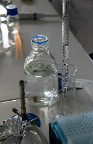
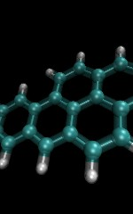

POLYGEL JAPAN / ABOUT US
Manufacturing & R&D
Polygel Group manufacturing capabilities and research

Manufacturing
Polygel operates a manufacturing plant in Brunei Darussalam, producing organic titanates, specialty additives for the polymer and electric vehicle industries, water-treatment solutions and homogeneous catalysts.
The Group has also described plans to expand its Brunei operations with acetic acid and aniline production at Sungai Liang Industrial Park (SPARK). These are plans described by the Group, and their present status remains subject to confirmation.
Polygel Group also maintains manufacturing operations in India. Polygel Japan acts as a commercial connection to these Group capabilities.

Research & Development
Polygel reports filing its first patent in January 2019. The Group describes an R&D facility in Singapore established in collaboration with the National University of Singapore, providing access to laboratory facilities and chemical engineering expertise.
Manufacturing specifications, plant capacities and current R&D arrangements will be updated when approved information becomes available.